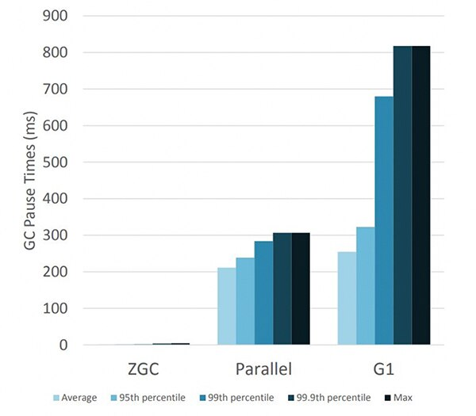

-Xmx<size> ‑XX:+UseParNewGC ‑XX:ParallelGCThreads=<n>
‑XX:+CMSConcurrentMTEnabled ‑XX:ConcGCThreads=<n>
‑XX:+UseCMSInitiatingOccupancyOnly
‑XX:CMSInitiatingOccupancyFraction=70
-XX:CMSBootstrapOccupancy=10
-XX:+CMSIncrementalMode
‑XX:+ExplicitGCInvokesConcurrentAndUnloadsClasses
‑XX:+ExplicitGCInvokesConcurrent
-XX:+CMSClassUnloadingEnabled
-XX:CMSTriggerRatio=70
-XX:CMSTriggerPermRatio=90
-XX:CMSWaitDuration=2000
-XX:+CMSParallelRemarkEnabled
-XX:+CMSParallelSurvivorRemarkEnabled
-XX:+CMSScavengeBeforeRemark
-XX:+CMSScheduleRemarkEdenSizeThreshold
-XX:CMSScheduleRemarkEdenPenetration=20
-XX:CMSScheduleRemarkSamplingRatio=4
-XX:CMSRemarkVerifyVariant=1Odśmiecanie pamięci po Jawie 9
Żegnamy CMS, domyślny jest G1, dochodzą Epsilon, Shenandoah i ZGC. Który (i kiedy) wybrać?
Tomasz Borek, @LAFK pl, http://lafkblogs.wordpress.com
Start
CO WYBRAĆ?! JAK ŻYĆ?! (to zależy oczywiście)
CMS i trzymamy się wersji gdzie on jeszcze jest?
G1 bo wystarczy albo nawet lepiej pasuje?
Shenandoah, wiele TB sterty, Red Hat potrafi?
Epsilon - śmieciarz co nie odśmieca
ZGC - wiele TB sterty, bezwzględnie niskopauzowy?
Agenda
o mnie
odśmiecanie pamięci w 4 slajdach
CMS, G1GC
Epsilon, Shenandoah, ZGC
podsumowanie
O mnie

Ja w sieci

Zlecenia
audyty kodu, infrastruktury, komponentów, systemu
testy i audyty wydajności czy bezpieczeństwa
wchodzę w bazy danych, GNU/Linuxy, sieci czy bezpiekę
programy na zlecenie
prelekcje, wykłady tematyczne, warsztaty, szkolenia
Pytania?

Odśmiecanie w 4 slajdach
Znakomita większość obiektów umiera młodo.
— hipoteza pokoleniowa

Organizacja pamięci (uproszczona)
Osiągalność

A co jak wątki aplikacji wtedy hasają?
Wnioski
każda zbiórka:
pauzuje (stopuje świat, zatrzymuje wątki apki)
czyści Eden
i przerzuca pomiędzy ocaleńcami (o2 i o1)
promocja to przerzutka z młodego do starego
przedwczesna jak brak miejsca w ocaleńcach
rozmiar sterty, ilość żywych, ilość korzeni ⇒ długość zbiórki (pauzy)
Strategie
przepustowość (równoleglenie) - rzadko pauza, ale potencjalnie duża
responsywność (współbieżność) - dużo małych pauz, niezauważalnych
Źródła
Książka o automatycznym zarządzaniu pamięci, tzw. GC Handbook, Jones, Hosking, Moss
publikacje Warburtona, Ragozina, Bordeta, Beckwith, Shipileva
Pytania?
CMS (do 14)
Concurrent Mark-Sweep - czyli bez Compact
| współbieżnie z wątkami apki, reaktywność |
| ConcurrentModeFailure bywa zabójczy |
By użyć:
‑XX:+UseConcMarkSweepGCBy stroić: hmmm, momencik, parsuję… 20 flag
By stroić:
Jawa 14 pożegnała CMS, algorytm który wciąż potrafił i osiągał, ale którego utrzymanie było conajmniej problematycznie.
Technikalia
ConcurentModeFailure - szeregowo po starym pokoleniu po fragmentacji pamięci
dobre dla okienkowców (np. Intellij używa) - nie zamarznie interfejs
dużo pokręteł! wyładowuje klasy, współbieżny z apką, na stare pokolenie, istotne jaki partner w młodym pokoleniu,
System.gc()…
Źródła
Pytania?
G1GC (8)
Wpierw śmieci, czyli Garbage 1(st)
| regionalizacja sterty - redefiniuje i uwspółbieżnia pokoleniowość |
By użyć: nic (domyślny) lub
-XX:+UseG1GCBy stroić: rozmiar sterty, ilość i rozmiar regionów (12 flag)
Jak to działa?
dobierasz ile regionów (2048-) i o jakim rozmiarze (1-32MB)
alokacja jest w Edenie i obszarach dla olbrzymów
G1 prowadzi buchalterię per region
pokolenia są rozbite a nie ciągłe
Regionalizacja
|
|

Ergonomia - wolne regiony
|
|
Koniec przedwczesnej promocji
|
|
Technikalia
zastępca CMSa, domyślny algo od Jawy 9,
wypuszczony w 2006, dojrzały teraz
regionalizacja sterty
dużo ciekawych zmian i usprawnień doprowadzających go do poziomu wyrafinowania poprzedników
optymalizacje na jakie G1 może sobie pozwolić
Źródła
Pytania?
Epsilon GC (11)
ε w językach formalnych w informatyce oznacza pusty napis (
"")
| Na wszystkie sytuacje, kiedy marzy Ci się algo co… NIC NIE ROBI (JDK11+) |
By użyć:
-XX:+UseEpsilonGC -XX:+UnlockExperimentalVMOptionsBy stroić: …
Technikalia
Śmieciarz ma heurystyki startu, prowadzi buchalterię, znajduje korzenie, chodzi po grafie obiektów, pauzuje świat, zlicza referencje, uważa na cykle, odpowiada za alokację i - nomen omen - odśmiecanie pamięci, robi analizę osiągalności, używa barier…
Epsilon dba o alokację. Reklamacja pamięci? To nie jego broszka.
Po co?
testy wydajnościowe bez śmieciarza
testy kiedy apka zeżre pamięć
testy interfejsu odśmiecania
robienie własnego śmieciarza [1]
start, szybka lecz ostra praca, koniec
nauka
1. Fajna zabawa, 20 minut i dużo się można nauczyć
Źródła
Własny śmieciarz
Pytania?
Shenandoah (15, od 12, +8 +11)
O Shenandoah, jej imię było…
| Nie OracleJDK. |
By użyć:
-XX:+UseShenandoahGC -XX:+UnlockExperimentalVMOptionsBy stroić: jest rekomendowana konfiguracja
Rekomendowana konfiguracja:
-XX:+AlwaysPreTouch -Xmx<X> -Xms<X> -XX:+UseLargePages -XX:+UseNUMA -XX:-UseBiasedLocking -XX:+DisableExplicitGC
Regiony inaczej

Za: Wiki projektu
Technikalia
współbieżnie ewakuuje obiekty
współbieżnie aktualizuje referencje do obiektów
sterty różnych rozmiarów mają podobne pauzy
współbieżny i równoległy i jednopokoleniowy
pauzy podyktowane są głównie rozmiarem zbioru korzeni
Źródła
Pytania?
ZGC (15, od 11)
Zee or Zed, both pronounciation are fine. Z stands for 'the'… not.
By użyć:
-XX:+UseZGC -XX:+UnlockExperimentalVMOptionsBy stroić:
-Xmx<size> -XX:ConcGCThreads=<nr>
| J21 przywraca pokolenia |
| ile wątków? heurystyka nieźle daje radę |
Po co nam ZGC?
wielo-TB sterty
max pauza: 10ms
współbieżny z apką, jak CMS
utrata przepustowości apki: max 15%
| Czas pauzy nie rośnie kiedy rośnie sterta lub ilość osiągalnych obiektów |
Czas pauzy

za: Per Lid, Stefan Karlsson
Technikalia
współbieżnie wyładowuje klasy - BEZ PAUZY
zwraca nieużywaną pamięć
sterta od 8MB do 16TB
współbieżny i równoległy i jednopokoleniowy
bariery odczytu (load barriers), kolorowanie wskaźników, uwzględnia NUMA
współbieżne procesowanie finalizacji i (J16) stosów wątków
Źródła
Pytania?
Podsumowując!
CMS współbieżnie oznacza, ale!
kopiuje młodych przy pauzach
bez kompresji starego pokolenia
ConcurrentModeFailure - seryjnie
G1 bez współbieżnej ewakuacji, pauza na kompresję
nie gwarantuje czasów pauz
Nowe pokolenie algorytmów, od J11
równolegle i współbieżnie
jednopokoleniowo
słabiej przepustowość, szybszy czas odpowiedzi
większe sterty
Wydajność
A przestrzeń meta?
Ta prezentacja świadomie pomija temat, ale dla chcących go zgłębić zalecam JEP387, wprowadzony w J16, o elastycznej przestrzeni meta.
Z vs Shenandoah?
przedwczesne pytanie:
Z wciąż usprawniany, wiele podobieństw obu (cele!), która Jawa? 11? 12? 13? 14? 15? 16?, jaka apka (co robi), jak bardzo potrzebna jest NUMA, testy Balosina z 13tki i syntetyczne, brak wieści z branży
*testujcie!
CMS: do 14, okienkowce i reaktywność, dużo strojenia
G1: 8, 9 domyślny, regionalizacja sterty, dojrzały
eksperymentalne:
Epsilon: od 11, tylko alokuje i nic więcej
Shenandoah: od 12, nie Oracle JDK, niskie pauzy
ZGC od 11 do 14, bezwzględnie niskie pauzy, TB sterty
Java 15: Z i Shenandoah
Dziękuję Wam!
Tomasz Borek @LAFK_pl